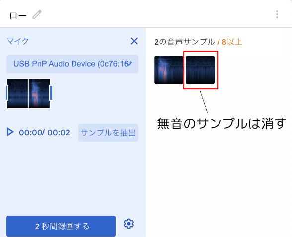

まずティーチャブル・マシンをつかってカードの画像認識データを作成します。
https://teachablemachine.withgoogle.com/
ただしトランプのカード(ジョーカーを除く52枚)を全て認識させようとすると大変ですので、今回はマークは1種類だけとし、「A(エース)」「5」「10」「K(キング)」の4枚だけ使用します。これに背景画像もくわえて、次の表の5枚の画像認識をしてください。
| 名前 | 撮るもの |
|---|---|
| A | A(エース)のカード |
| 5 | 5のカード |
| 10 | 10のカード |
| K | K(キング)のカード |
| なし | 背景 |
カードは底を机の上に置いて動かないようにし、カメラの画像いっぱいに写すようにして撮影するとうまく認識してくれるようになります。 またカードは動かないようにしているので、撮影する画像の数は20枚程度でOKです。
学習(トレーニング)して、プレビューで結果を確認したらアップロードしてアドレスをメモ帳アプリなどに保存して下さい。
次に自分の声の音声認識データを作成します。 バックグラウンドノイズもくわえて、次の表の3つの音声の認識をしてください。
| 名前 | 録音するもの |
|---|---|
| バックグラウンドノイズ | 何も話してないときの音 |
| ハイ | 「ハイ」の声 |
| ロー | 「ロー」の声 |
「ハイ」と「ロー」の音は短いので、何も録音されてないサンプルが出来るときがあります。何も録音されてないサンプルの上にマウスを動かすとゴミ箱アイコンが表示されるので、ゴミ箱をクリックして消しましょう。
学習(トレーニング)して、プレビューで結果を確認したらアップロードしてアドレスをメモ帳アプリなどに保存して下さい。